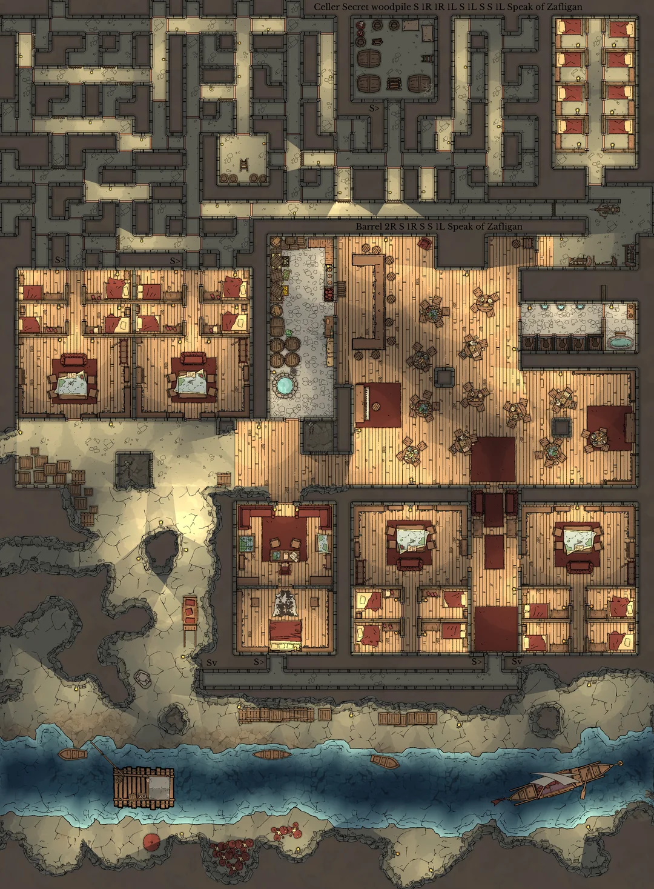

Tavern at The Docks
Context
This map is the secret hideout from a group they players are searching. At first they have no clue how to reach it, so they can either investigate at the risk of being caught, or try decieve the tavernkepper that they are interested in joining the group, as they are looking for new recruits. Their objective is to find and arrest members of this group and sabotage his terrorist attack.
Creatures
In these corridors we find humans armed with light crossbows and cimitars, people who very recently started training and fighting, which don't oppose that much of a threat, but in these narrow corridors even inexperienced fighters can put players in trouble if they allow themselves to be surrounded. To top it off, even if they don't know it, the leader of this group is not a novice: she's a lizzardfolk mercenary, with decades of experience and a formidable warrior that cannot find its place in peacetime.
Gimmicks
For this map, I went with the interaction, cover and melee & ranged gimmicks:
- Interaction: In these map there's a lot of doors, some of them locked. The bandits did this in order to throw off any group searching for them, and, if they are forced in combat, will use these corridors as a gateaway to their bases, where they can fortify. Also, they have a room full of gunpowder that are planning to use in a future attack against the city council, this is a massive objective for the players, if they blow it up or make the barrels dissapear, the attack will be cancelled.
- Covers: The narrow corridors and sharp covers make that the combat is almost a straight line, where ranged users can't really risk hitting their allies. These creates a chaotic combat where everybody is either engaged in melee or protecting in sharp corners a retreat for their comrades.
- Melee and Ranged: This map is not ranged friendly: the narrow corridors create a lot of chokepoints, making ranged attacks very hard, but also for melee sharp corners can be a good corner for them, forcing players to really think where they want to move as they don't know what's ahead.
Sketch
This was the reference I found with the idea i had in mind: a tavern with a secret labyrinthic hideout where the players suspect the group they are searching is hiding. The original post and author can be found here.
Final Map